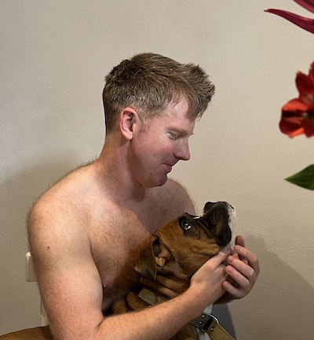

I'm James. As a software developer and consultant based in Berlin, I specialize in tackling intricate, demanding, imaginative, and meaningful projects.
I build software with interchangeable modules that can be improved and fixed without changing the entire system by prioritising the development of features in manageable chunks to reduce time and resource usage.
In valuing communication skills and teamwork as much as the technical, I delivery quality software to suit your company’s unique needs in a dynamic, ever-changing technological landscape.
In my view, technology has advanced to the point where its capabilities are almost limitless. As such, the obstacles that remain are no longer solely technical in nature, but instead center on maintaining positive business relationships. Building and maintaining a high-performing team is a greater priority than the technology itself, and I am committed to fostering a comfortable, positive, and productive business environment.
I am acting CTO and lead developer of the Stude music production system, which creates a virtual online recording studio. This system, which is yet to be publicly launched, has already been used to produce several European chart-topping tracks. https://www.stude.io/. “Create music with anyone, anywhere, without delay. "
Ad agency Berlin: https://www.eobiont.de/
“eobiont is a German-American strategic marketing, advertising and design agency based in Berlin, Germany. Our passion is to help organizations solve difficult communication challenges and help them connect their company message to user needs. Much of our work is centered on public awareness, high-tech and innovation.”
I developed the Ampelinis XXL children’s educational game for Android and iOS - this was 6 years ago, and the app is no longer being published..